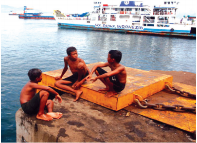

Persamaan Linier Satu Variabel
Tujuan Pembelajaran:
- Siswa mampu Menentukan persamaan menggunakan perkalian dan pembagian
3. Penyelesaian PLSV
b. Menyelesaikan Persamaan Menggunakan Perkalian atau Pembagian
Perhatikan Persoalan dibawah ini!

Tiga anak logam yang bersahabat telah mengumpulkan 24 koin seribuan.
Mereka beristirahat di dermaga untuk membagi rata koin yang mereka dapatkan.
Berapa banyak koin seribuan yang setiap anak dapatkan?
Bagaimanakah persamaaan yang bisa kalian buat untuk menyatakan masalah disamping?
Perhatikan timbangan di bawah ini!